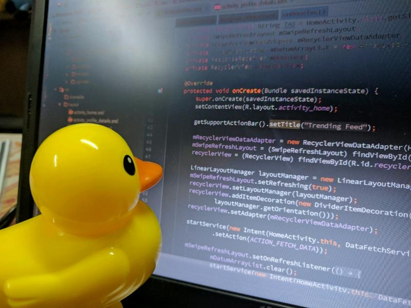

Solving Coding Problems#
Learning Objectives:#
To be aware of tools and techniques that can be used to debug code.
To understand how we may solve error messages using appropriate tools.
To have an awareness of StackOverflow, Python documentation and ChatGPT.
Be able to use AI to solve programming problems.
Overview#
As you will likely have noticed by now, when we are coding we are prone to making mistakes or misunderstand how to use some tool which means that when we execute our code we are greeted with error messages. This week you will be introduced to the tools and information repositories that we can use to debug our code and get rid of those pesky error messages.
Sanity Checking#
As you will likely have noticed by now, when we are coding we are prone to making mistakes or misunderstand how to use some tool which means that when we execute our code we are greeted with error messages. This week you will be introduced to the tools and information repositories that we can use to debug our code and get rid of those pesky error messages.
## Sanity Checking
The first thing we can do when we are greeted with an error message is to sanity check our work. Take a look at the bottom of the error message and take a look at which line in the script it is referencing, take a look at that line and double check that it looks how you expect it to. Some common things to look out for are:
Is everything spelt correctly?
Are all the brackets closed?
Have we used capital letters where there should be none or vice versa (e.g. variable names).
Is everything that needs to be defined actually defined?
Sometimes, the line of code reference in the error message will be completely fine, but the line above it may need completing instead. For example, if we run the code in the cell below we will be greeted with an error message telling us which line of the code is responsible for our error:
def print_message()
message = "Hello World!"
print(message)
print_message
File "<ipython-input-1-e2985e6c9984>", line 1
def print_message()
^
SyntaxError: invalid syntax
Before you execute this snippet of code consider why it is flawed - does the error message agree with your diagnosis?
If everything in your code is looking fine, you may want to do an exercise commonly referred to as “rubber-ducking”. This is something that you may do by yourself or with a friend (who may or may not be an inanimate object… for example… a rubber duck.), but the idea is simple, explain step-by-step or line-by-line what your code is doing using natural language. More often than not, you will quickly identify what is causing the error in your code - annoyingly this will typically be a small and simple mistake that you otherwise would have overlooked. RubberDuckDebugging.com summarises the method quite nicely:
“The rubber duck debugging method is as follows:
Beg, borrow, steal, buy, fabricate or otherwise obtain a rubber duck (bathtub variety).
Place rubber duck on desk and inform it you are just going to go over some code with it, if that’s all right.
Explain to the duck what your code is supposed to do, and then go into detail and explain your code line by line.
At some point you will tell the duck what you are doing next and then realise that that is not in fact what you are actually doing. The duck will sit there serenely, happy in the knowledge that it has helped you on your way.
Note: In a pinch a coworker might be able to substitute for the duck, however, it is often preferred to confide mistakes to the duck instead of your coworker.”
Feel free to talk to a rubber duck online when solving your problems.

Google is your friend#
It may appear obvious that we can use google to solve coding related queries, but here is some sensible advice nonetheless:
Avoid typing out long questions related to a given problem - try to be specific and use commonly used phrases or words that you have come across during your time coding.
Copy your error into google - not the entire error, just the bit that is relevant to the line of code that is not working. Remove any specific code from your script that the error message quotes if required.
Look at more than one search result - more often than not the problem you are facing will have been faced by somebody else before and some variation of the problem you are trying to solve will be hiding on a forum somewhere. Take time looking through different search results and try to identify which problem is most similar to yours (or to find a solution that you understand) and adapt your code accordingly.
Modify your search - sometimes just rephrasing your search will help you find a suitable solution.
## Stack Overflow and W3 Schools
Inevitably when searching for a solution to a problem you will encounter StackOverflow or specific Python documentation (like the ones linked in previous weeks briefs).
StackOverflow is a forum where people are able to ask questions, submit their codes and receive feedback. When using StackOverflow it is important to make sure that you read through the original post and the proposed solutions to determine how applicable they are to solving your problem. It may be the case that you can simply take the code provided to solve a simple problem, or you may need to study the code line-by-line to understand what the provided code is doing and how it may be modified for your use. If you take a sample of code from an online forum it is imperative that you understand what it is doing!
Although it is unlikely that you will need to post to StackOverflow yourself, please do review the “Asking for Help” section below, which gives advice on how to effectively ask for help when coding. Asking for help appropriately is a skill in itself so it is worth spending some time reviewing these materials.
Another excellent resource for learning Python is W3Schools. This website teaches you how to write Python code, explains what different tools/packages do, and shows you how to use them with examples and snippets of executable code. If you know where your code is breaking (e.g. it’s something to do with plt.plot), but do not know how to fix it, this is an excellent website to refer to.
Python Documentation#
Many times the error we encounter will be related to the arguments required for an imported function or package - to debug these errors we may need to consult appropriate documentation.
When you first encounter this type of material it can appear somewhat inaccessible and intimidating, but let’s inspect the typical anatomy of Python documentation so that we may feel more comfortable using it to solve our coding problems. Let’s take a look at the scipy.stats.linregress documentation:
At the very top of the page we can see the package that the linregress function comes from - scipy.stats.
Following this we see an example of how one would type the function into their code and the arguments that they would need to include, for example, we are told that the x and y parameters are required and that these each need to be array_like (i.e. we need a list of x and y data points). You may note that the documentation outlines that we may set “y=None” if our x array is 2 dimensional.
In this example there is the “alternative” argument, which by default is set as “two-sided” but can be changed to “less” or “greater” if we want to ensure that the gradient of the line is less than or greater than zero, respectfully.
This is all of the information we need for us to be able to use the linregress function.
Following the parameters are the returns (see above) - these being all of the parameters that we can extract from the linregress function once it has successfully fit out data. From the documentation we can see that our “result” is an object with several attributes: the slope, intercept, rvalue, pvalue, stderr, and inctercept_stderr, and that each of these values are float types. Each attribute is accompanied by a description of what it is for user ease.
As an added bonus, the documentation also references similar functions that may be of use to us - this can be particularly useful when we are trying to do something specific, but do not know if a function exists/the name of a function needed.
Next, the documentation outlines any specific notes to be aware of - in this case the different ways in which we can extract our fit information, note only one method allows us to determine the intercept standard error…
Finally, and perhaps most usefully, at the end of the documentation we are typically given examples of how to use the code that we are reading about. This may be accompanied by an example output of the code.
… and that’s all there is to it!
Documentation simply tells us what goes in and what comes out and to clarify anything we may be unsure of. If further information is required that the documentation does not outline, appropriate links will usually be provided for us to follow.
It may take a few reads to understand documentation, but this is usually worth our time nonetheless.
Asking for help#
Most of the coding errors that you will encounter in this course will be solvable using the tools above, however sometimes when we are well and truly stuck we will need to ask for help. Asking for help is a skill that extends beyond the scope of programming and these lessons may be useful in other situations and aspects of our lives.
The challenge here is making sure that we are able to clearly communicate what our problem is and the context surrounding it - if we can master this skill we will be in a better position to solve our problems as the ‘expert’ will be able to understand the problem at hand and be able to offer suitable advice. If we are unable to do this, we may receive inappropriate advice that leaves us needing to ask follow up questions, which may annoy the expert and discourage them from helping us further.
In order to effectively solve problems by asking questions, I refer you to the “Asking For Help” module from the Odin Project - here you will find information on how to ask questions in the most effective way so that people are able to help you solve them. Linked below are the articles that form the assignment tab (I strongly recommend that you give them a read):
We should ask for help sparingly and only after we have tried to solve our problem through other means. Asking for help to solve common or simple problems is also a good way to alienate the people whose advice we seek - showing initiative and persistence is a good way to get them on side!
The Odin Project is a free online course complete with a learning community where you can learn all of the skills required to become a web developer from scratch. The course culminates with you building a series of portfolio projects and learning how to be successful at applications/interviews for web development jobs. I highly recommend this resource if these are skills you wish to learn or if you are interested in a career in web development.
Activities#
Kinetic Energy and Velocity Relationship#
The following section of code is a function designed to calculate and plot the kinetic energy and velocity of an object moving at constant acceleration starting from some initial velocity.
The function takes the following arguments:
The mass of the object
The object’s acceleration
The initial velocity of the object
A time interval (the time that elapses between calculations)
The total time period for which calculations will be performed across.
Take some time to read through the code and work out what it is doing. Make sure you understand how the function works, how the ‘for’ statement in the function works, and review the quirks of the plotting section.
To avoid using the same y-axis for two different scales the plot produced has two y-axis, one for the kinetic energy and one for the velocity (made as two plots sharing the same x-axis). Making the plot this way means that plt.legend() only shows one of the data labels. For this reason a few minor ammendments have been made to the plotting code - don’t worry too much about this, I only mention it in case it looks a little unfamiliar and you are unsure why.
Task
Copy this code and save it into a Jupyter Notebook.
Run the code and read through the error messages output. These will tell you where the error is occuring (View >> Toggle Line Numbers will make it easier to spot where these are).
Look through the code and try to fix any minor mistakes.
The mistakes in this section of code should be fixable simply by sanity checking the code (error messages will guide you).
# Broken Code
import matplotlib.pyplot as ply
mass = 25
acceleration = 9.8
initial_velocity 0
time_interval = 1
total_time = 50
def kinetic_energy(mass, acceleration, initial_velocity, time_interval, total_time)
velocity = []
kinetic_energy = []
time = []
n = total_time / time_interval
for i in range(int(n))
time_value = i*time_interval
time.append(time_value)
velocity_value = initial_velocity + acceleration * time_value
velocity.append(velocity_value)
kinetic_energy_value = 0.5 * mass * velocity_value**2
kinetic_energy.append(kinetic_energy_value)
fig, ax1 = plt.subplots(figsize = (8,8))
plot1 = ax1.plot(time, velocity, marker = 'o', colour = 'k', linestyle = ' ', label = 'Velocity')
ax1.set_xlabel('Time [s]')
ax1.set_ylabel('Velocity [m/s]')
ax1.tick_params(axis='y', labelcolor='k')
ax1.grid(color = 'grey')
ax2 = ax1.twinx()
plot2 = ax2.plot(time, kinetic_energy, marker = 'o', color = 'b', linestyle = ' ', label = 'Kinetic Energy')
ax2.ylabel('Kinetic Energy [J]', color = 'b')
ax2.tick_params(axis='y', labelcolor='b'
ax2.grid(color = 'cornflowerblue')
# As we have two y-axis, we need to add this section so that our legend is formatted appropraitely
plots = plot1 + plot2
labs = [l.get_label() for l in plots]
plt.legend(plots, labs, loc=0)
plt.show()
kinetic_energy(mass, Acceleration, initial_velocity, time_interval, total_time)
File "<ipython-input-2-48b82f5cfc2d>", line 7
initial_velocity 0
^
SyntaxError: invalid syntax
Superposition of Standing Waves#
In this exercise, I would like you to become familiar using online sources of information for yourself. To do this you will write a piece of code that help visualise the principle of superposition of waves.
A function is defined that outputs the amplitude of a standing wave of known wavelength for a given value of displacement along in the x-direction. Your task is to write the rest of the code required to produce the following plot:
Task
Using the function defined, recreate the plot shown in the figure above (wave 1: wavelength = 5 m & amplitude = 5, wave 2: wavelength = 1 m, amplitude = 2.5). Note that this plot has some features that we have not covered in the course notes and you will need to find information online to recreate it.
The key things you will need to figure out how to do are:
Use the function to generate the two waves and their superposition (1000 points for x between 0 and 2\(\pi\) for each wave).
Add additional ticks on the y-axis.
Fix the position of the legend on the plot.
Make the labels in the legend be arranged horizontally rather than vertically.
Add the horizontal black line at y = 0.
Fill the white space beneath each of the waves with appropriate colours and set their transparencies to 20%.
Use Python documentation, Google, stackoverflow, w3-schools etc. as sources of information when reproducing the plot.
# Incomplete code
import numpy as np
import matplotlib.pyplot as plt
def standing_wave(x, amplitude, wavelength):
wavenumber = (2*np.pi / wavelength)
return amplitude * np.sin(wavenumber * x)
# Input values for the first standing wave
# Input values for the second standing wave
# Define the x values for the plot
# Calculate the individual standing waves and their superposition
# Plot the standing waves and their superposition as outlined in the brief
plt.figure(figsize=(10, 8))